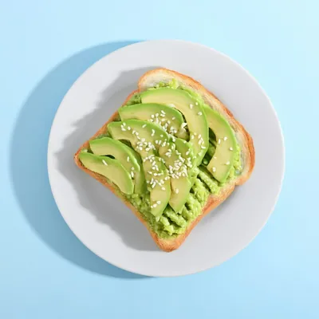
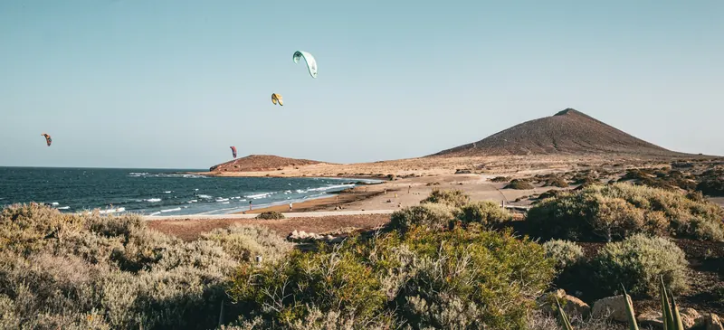

Desayunos y brunch
Desayunos y brunch con viento a favor, en el paseo de El Médano.
Hoy, de 08:00 a 15:00
Cocina hasta las 14:30. Sin reservas, salvo grupos de 6 o más.
La carta
Todo lo que hay, con su precio. Para leer con las manos mojadas: letra grande y precios a la derecha. Precios de ejemplo.

¿Alergias o intolerancias? Pregúntanos y te decimos los alérgenos plato a plato.
Precios de ejemplo, con IGIC incluido. Cocina hasta las 14:30; cafés y zumos hasta las 15:00.
El alisio llega antes que tú
Sopla del nordeste casi todo el año, y en El Médano se nota: la bahía amanece llena de velas y cometas, y en la terraza las servilletas van con pinza.

Después del agua
Vienes con sal en el pelo y hambre de verdad. Siéntate al sol, que aquí nadie mira el neopreno.
La mesa larga
Wifi y enchufes. Portátiles bienvenidos; los fines de semana, hasta las 12:00, que luego llega el brunch.
Montaña Roja
El volcán rojo del final de la playa: 171 metros, reserva natural de dunas y chorlitejos. Desde la terraza se ve entero.
Médano quiere decir duna: el pueblo se llama así por la arena que tiene debajo.
Mesa para 6 o más
No reservamos, salvo grupos. Dinos cuántos son, qué día y a qué hora, y te dejamos el WhatsApp escrito.
Horario y cómo llegar
Todos los días, 08:00–15:00
- Desayunos
- 08:00–12:00
- Brunch
- 12:00–15:00
- Cocina
- hasta las 14:30
Dónde
Paseo Marítimo 21, 38612 El MédanoGranadilla de Abona, Tenerife
(dirección de ejemplo)
Frente a la playa, a dos pasos de la Plaza Roja. Hay bicis y tablas en la puerta casi siempre: entra igual.